I came to Canada with a Chemical Engineering background, built a management career at McDonald's within ten months, and later moved into Business Insights & Analytics at Humber.
Without a technical background, I stepped into the BIA program and have since developed practical skills in SQL, Python, Power BI, and cloud platforms by taking on what's unfamiliar and working through it. Today, I enjoy working in a space where business, data, operations, and people meet: understanding a problem, breaking it down, and figuring out what the data is telling me and what can actually be done about it. I'm reliable, adaptable, detail-oriented, and I see things through.
B.Eng, Chemical Engineering.
People management, daily operations, standards under pressure.
SQL, Python, Power BI, Azure, Databricks, all learned from zero.
IN PROGRESSA bakery-themed e-commerce platform built end-to-end on Azure: a three-tier architecture running a MySQL Flexible Server, an Ubuntu Linux VM, and phpMyAdmin, with a custom PHP front end deployed on top and a purchased domain pointed at the live app over HTTPS.
Infrastructure has since been decommissioned to control costs. Screenshots of the live build (customer storefront, staff dashboard, checkout flow) stand in for the link.
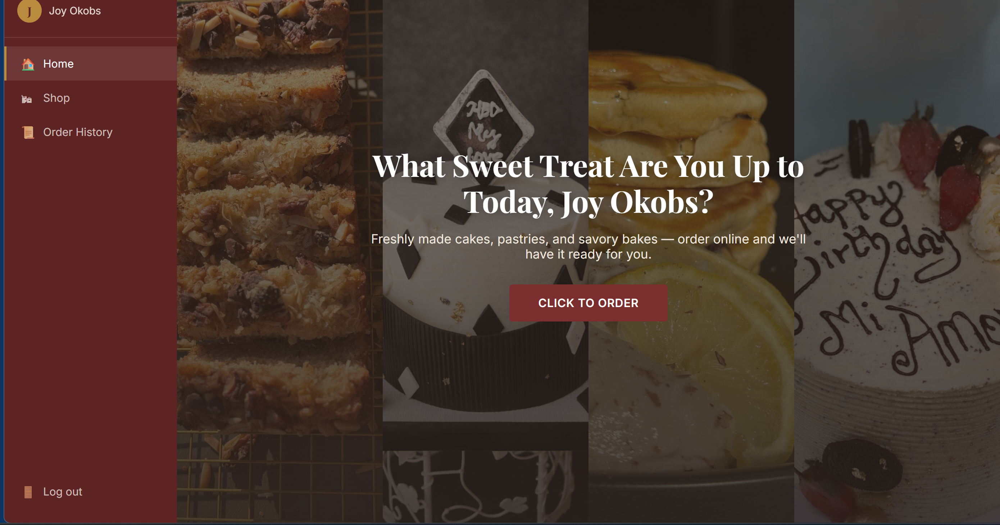
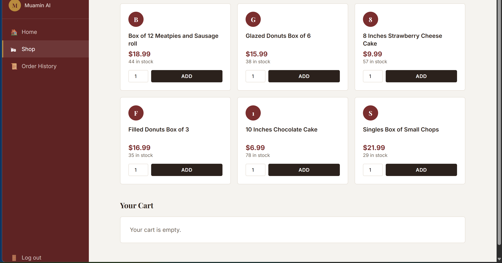
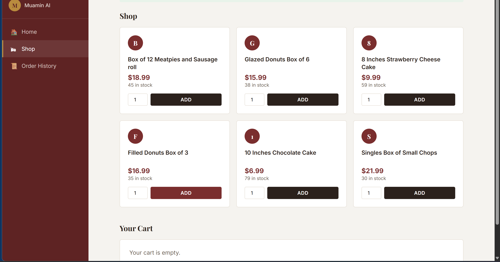
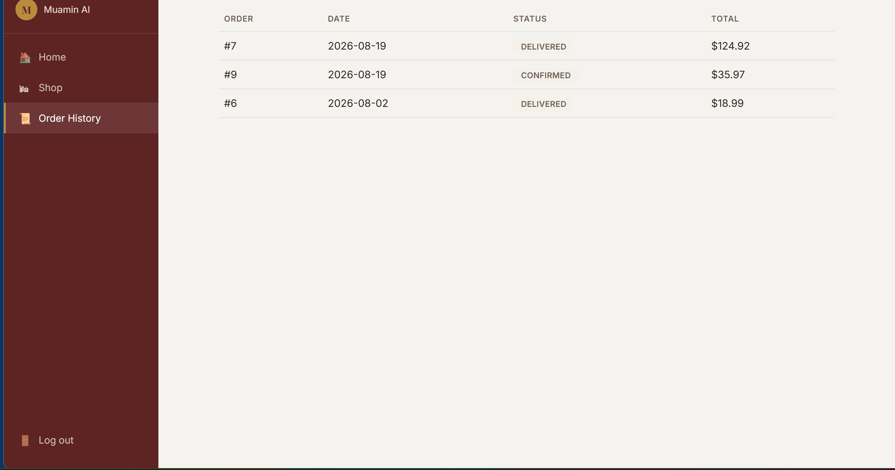
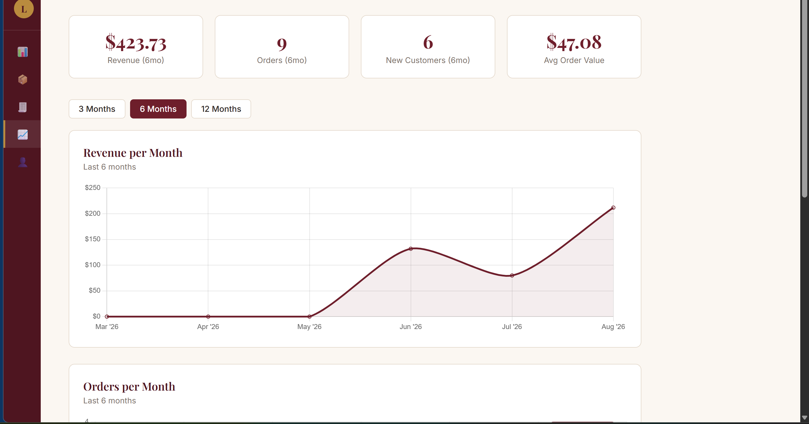
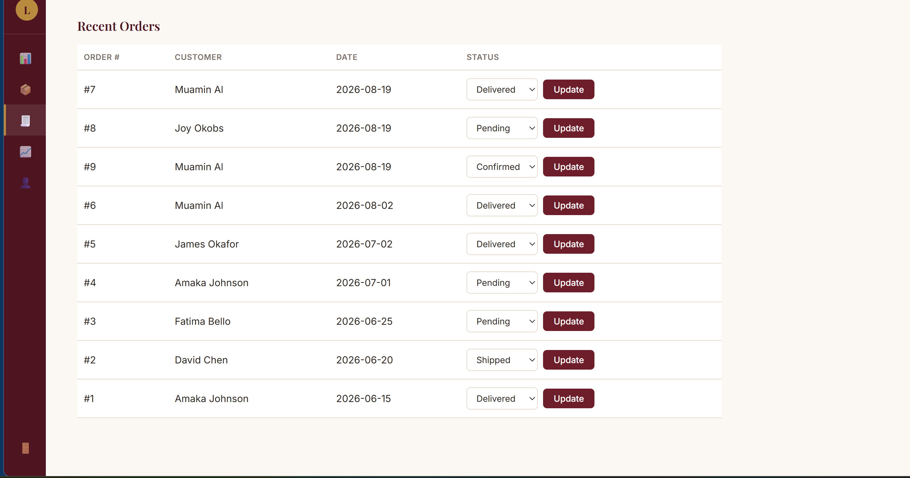
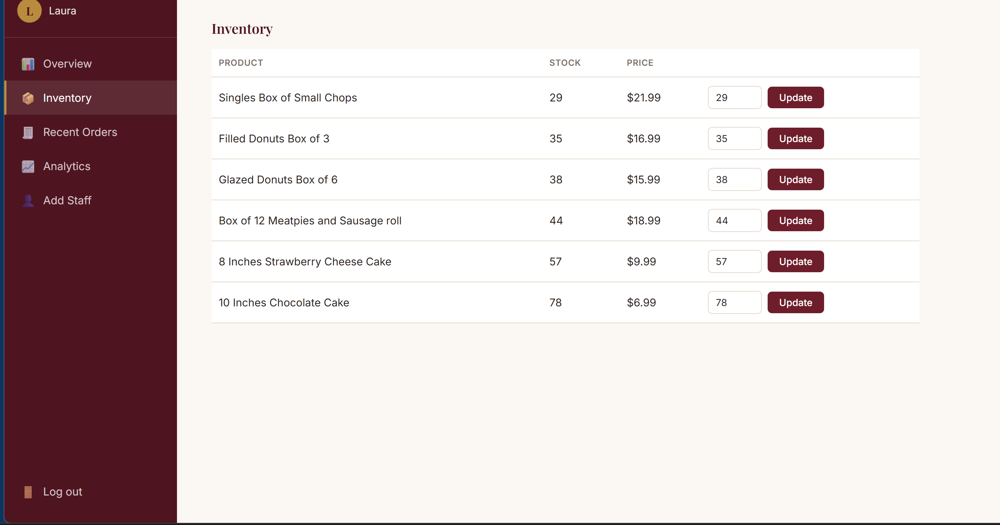
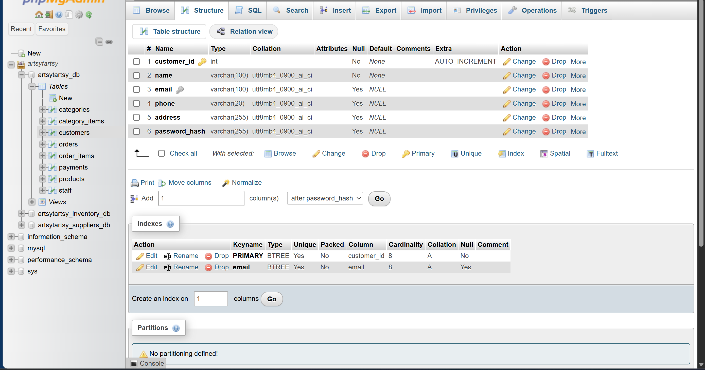
Segmented customers from a FY2020–21 sales dataset (30,000+ transactions, sourced from AWS S3) using Recency, Frequency, and Monetary analysis, to identify which customers are worth the marketing budget and which are at risk of churning.
The headline finding: nearly half the customer base had gone dormant, while new customer acquisition was thin, a signal that retention efforts were overdue and top-of-funnel growth needed attention.
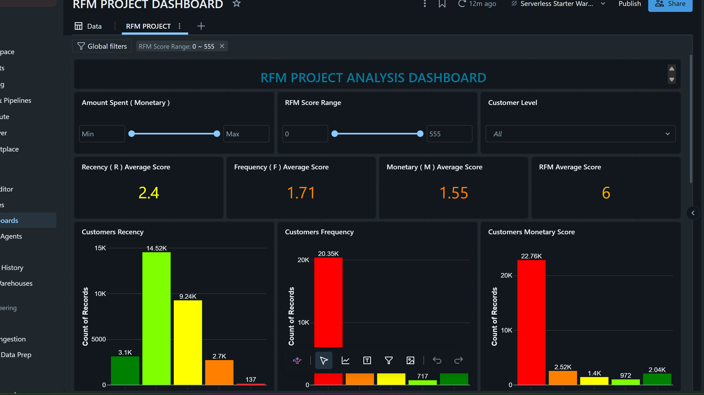
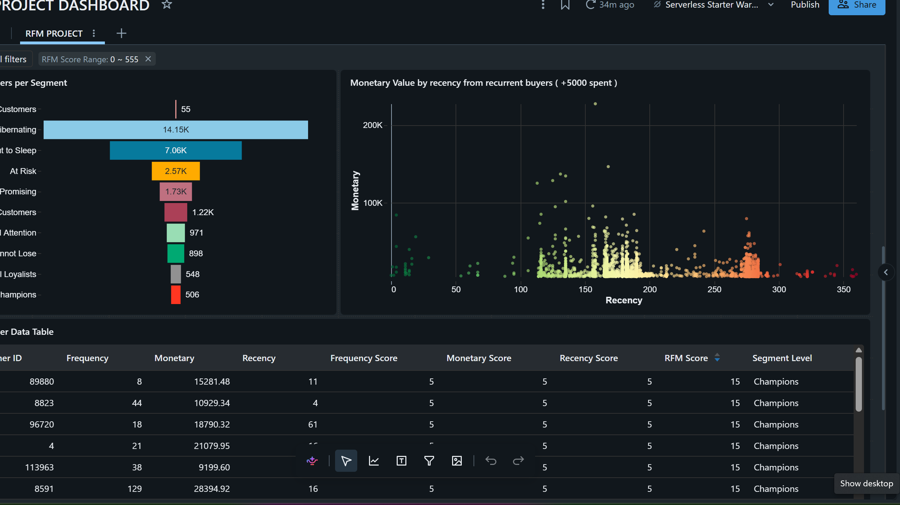
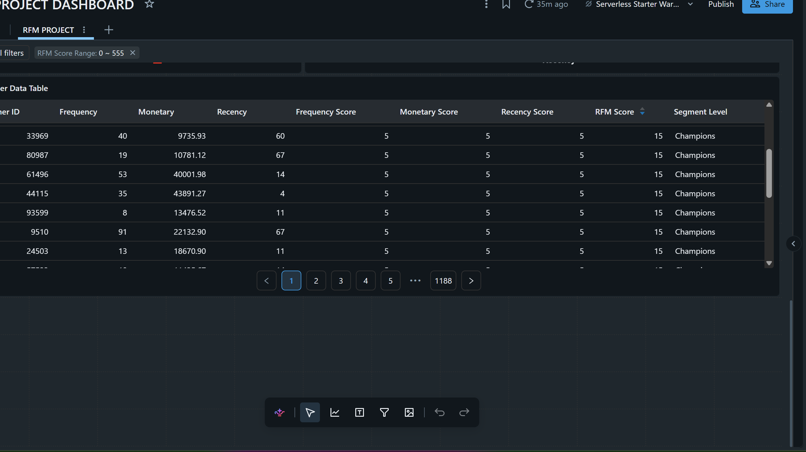
Full ratio analysis of Coca-Cola (NYSE: KO) and PepsiCo (NASDAQ: PEP), using each company's balance sheet and income statement to work out which was the stronger, safer investment.
Conclusion: Coca-Cola was the stronger, safer investment option, outperforming PepsiCo across most ratio categories, especially liquidity, long-term debt management, and profitability. PepsiCo remained a solid company with more efficient inventory management, but Coca-Cola's overall financial position made it the better pick.
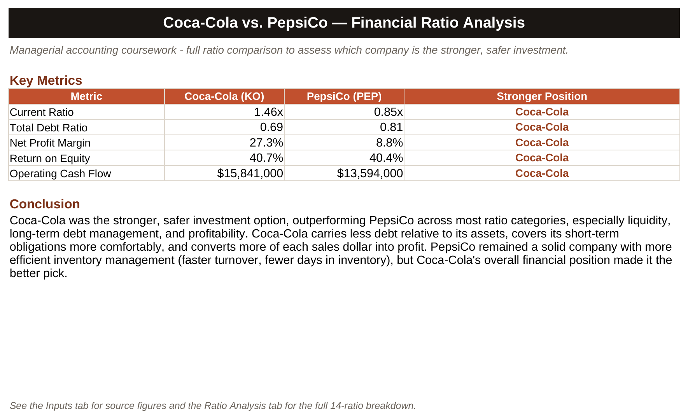
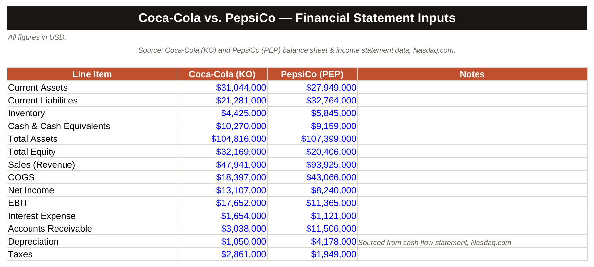
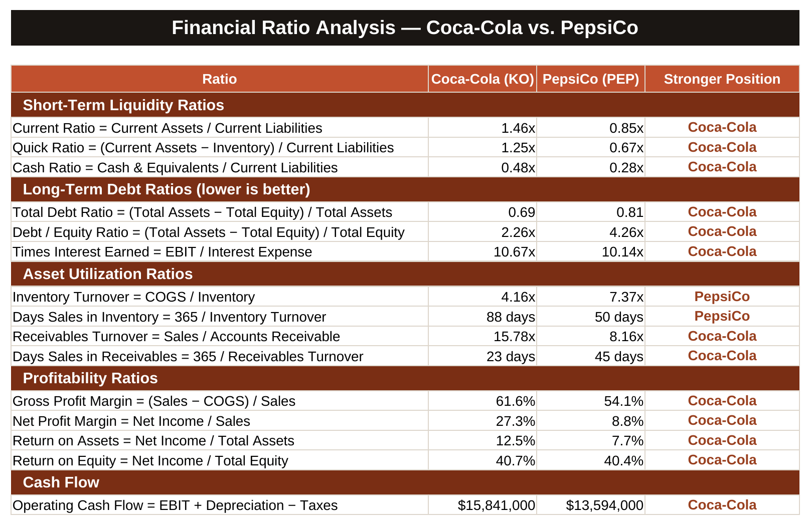